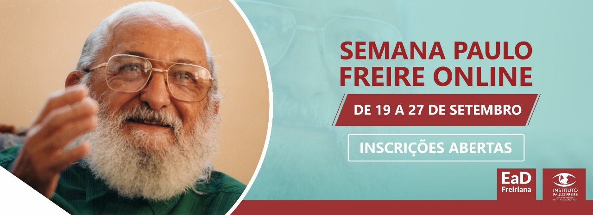
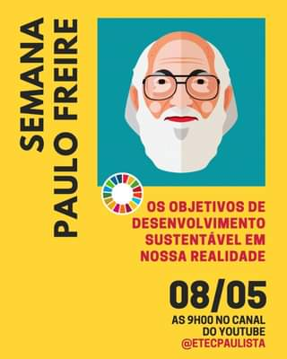

Bem vindo ao site de um dos grandes escritores do Brasil !
Paulo Freire é considerado um dos pensadores mais notáveis na história da pedagogia mundial tendo
influenciado o movimento chamado pedagogia crítica e é também o Patrono da Educação Brasileira.
Semana Paulo Freire


Maio é o mês em que as Escolas Técnicas Estaduais (Etecs) promovem uma programação especial em homenagem a Paulo Freire, o patrono da educação brasileira.
As Etecs organizaram uma série de eventos e atividades como forma de promover discussões e disseminação de conhecimentos sobre a obra e o legado do filósofo pernambucano.
A Etec Padre Carlos Leôncio da Silva, de Lorena, apresentou no dia 5 a live Educação e Pandemia, que foi transmitida pela plataforma do YouTube. O evento teve a participação da blogueira e bióloga Isa Bertoleti e do professor e jornalista Miguel Júnior.